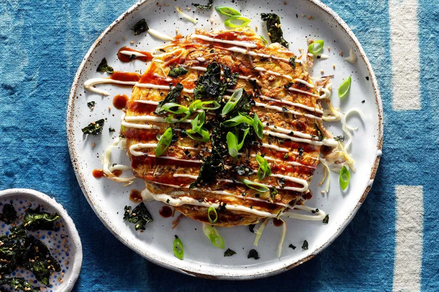

Okonomiyaki (savory pancakes)
A famous Japanese savory pancake
Recipe:
2 cups flour
1 cup water
2 eggs
2 cups shredded cabbage
100g sliced meat or seafood
1 tbsp soy sauce
Okonomiyaki sauce
Mix flour, water, and eggs into a batter.
Add cabbage and soy sauce, then pour into
a frying pan. Add meat or seafood on top and
cook both sides until golden brown. Finish
with Okonomiyaki sauce.